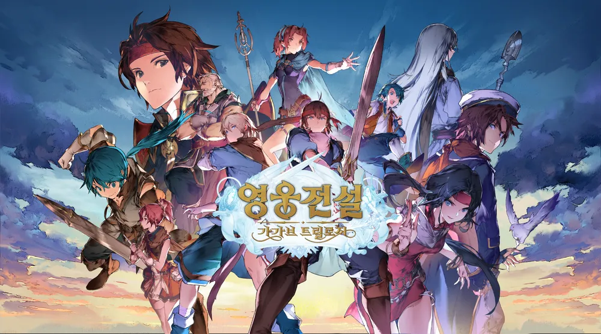

전투 데이터 스냅샷
실제 도전에 사용된 편성, 전투력, 속성과 역할 구성을 추천 정보로 제시합니다.
01 · COLLECTIBLE RPG
모험·던전·길드·시즌 이벤트를 연결하는 메인 콘텐츠와, 스태미너·추천 팀 편성·영웅 성장 시스템을 기획했습니다.

스태미너가 최대치에 도달하면 충전이 멈추는 구조는, 보유량을 비우기 위해 접속 시간을 맞춰야 한다는 부담으로 이어질 수 있습니다. 자동 충전과 추가 충전을 분리해 최대치 이후에도 충전분을 보유할 수 있는 구조를 설계했습니다.
화면에서는 충전 스태미너와 예비 스태미너의 보유량, 다음 충전까지의 시간, 충전 중지 상태를 각각 확인할 수 있습니다.

최대치 이후의 충전분을 별도로 보유할 수 있게 해 접속 부담을 줄이고 편의성을 높이는 것을 목표로 했습니다.
신규 유저가 팀 구성 기준을 알기 어려우면 콘텐츠 진입 장벽이 높아질 수 있습니다. 전투 데이터 스냅샷을 바탕으로 추천 편성을 보여주고, 유저가 해당 구성을 자신의 팀에 복사할 수 있도록 설계했습니다.
실제 도전에 사용된 편성, 전투력, 속성과 역할 구성을 추천 정보로 제시합니다.
추천 사례를 확인한 뒤 복사 버튼으로 자신의 편성에 적용할 수 있는 흐름입니다.

편성 기준을 모르는 유저에게 실제 구성 사례를 제공해 콘텐츠 도전을 시작하기 쉽게 만드는 것을 목표로 했습니다.
추천 선정 규칙가장 최근에 해당 스테이지를 클리어한 덱을 기준으로, 전투력이 낮은 편성 덱을 보여주도록 합니다.
시너지 스톤의 주요 파밍처인 ‘경계의 유적(기억의 경계)’을 도전과 반복 플레이가 이어지는 콘텐츠로 설계했습니다. 시즌마다 참여 가능한 에피소드 영웅을 구분하고, 스테이지 진행에 따라 반복 던전과 전용 성장을 열어 주는 구조입니다.
시즌에 맞는 대륙과 에피소드 영웅으로 팀을 구성합니다. 스테이지는 순서대로 진행하고, 시즌이 끝나면 진행 상태와 전용 성장을 초기화하도록 정의했습니다.
스테이지 진행에 따라 ‘기억의 저장소’를 개방·확장합니다. 반복 플레이로 얻은 재화를 전용 성장에 사용해 다음 도전을 준비하게 했습니다.

성장 노드마다 선행 노드와 필요 재료를 정의했습니다. 재료가 부족하면 비용을 붉게 표시하고 버튼을 비활성화하며, 잠긴 노드는 선행 조건을 안내하도록 구성했습니다. 시즌 초기화 규칙과 함께 성장 단계·버프·비용을 데이터로 연결했습니다.

시즌 스케줄, 영웅 편성 제한, 스테이지·반복 던전, 성장 노드와 보상 규칙을 정의하고, 로비·스테이지·성장 UI 및 데이터 테이블로 구체화했습니다.
길드 생성·가입부터 초대·탈퇴·추방, 역할별 권한과 길드 성장까지 운영 규칙을 정의했습니다. 같은 가입 화면에서도 길드의 가입 방식과 유저의 대기 상태에 따라 가능한 행동이 달라지도록 구성했습니다.
자동 가입·승인 가입·가입 불가를 구분합니다. 추천 목록에서는 정원이 찼거나 가입 불가인 길드를 제외하고, 검색 결과에서는 가입 불가 길드도 확인할 수 있도록 정의했습니다.
길드장·부길드장·길드원의 권한을 구분해 초대, 가입 승인, 추방과 권한 위임의 범위를 정리했습니다. 탈퇴·추방 뒤에는 재가입 대기 상태를 안내하도록 했습니다.

길드원 목록에서 역할·접속 상태를 확인하고, 권한에 따라 관리 행동을 사용할 수 있도록 설계했습니다. 개인 출석은 보상과 길드 경험치로 이어지고, 누적된 경험치로 길드 레벨과 콘텐츠 해금이 연결되는 구조입니다.

기본 운영 규칙, 역할별 권한, 가입·재가입의 예외 상태, 개인 출석과 길드 경험치·레벨을 UI와 데이터 정의로 연결했습니다.
길드 레이드의 시즌 운영, 팀 편성과 전투 진행, 결과·랭킹·보상 규칙을 기획했습니다. 수정안에서는 선발팀과 후발팀을 연속으로 사용하는 전투로 확장하고, 두 팀의 기여를 합산 점수와 개별 리포트로 확인하도록 구성했습니다.
선발·후발팀 사이에 같은 영웅을 중복 편성할 수 없도록 제한했습니다. 두 팀 모두 영웅이 한 명 이상 있어야 입장할 수 있고, 편성 부족 상태에 맞는 안내를 정의했습니다.
선발팀 전투가 끝나면 결과 화면을 거치지 않고 후발팀 전투로 이어집니다. 후발팀은 전투 정보와 보스 상태를 초기화해 시작하고, 두 전투가 끝난 뒤 최종 결과를 표시합니다.

결과 화면에서는 선발·후발팀의 점수를 합산해 보여 주고, 데미지 리포트는 팀별 탭으로 나눠 확인하게 했습니다. 개인 기록과 길드원 점수 합산 랭킹을 연결하고, 개인 달성 보상과 길드 랭크 보상을 구분했습니다.

입장 티켓을 소모하지 않는 방식으로 변경하고 티켓 표시를 제거하도록 정의했습니다. 참여할 수 없는 상태는 별도 시스템 메시지로 안내합니다.
70레벨 달성 이후의 성장 요소 부족과 성장 재화의 잉여화를 해결하기 위한 시스템입니다. 추가 성장 동기와 재화 소비처를 만들고, 계정 단위로 성장 효과를 적용해 영웅마다 반복 육성하는 부담을 줄이는 것을 목표로 했습니다.
70레벨 이상 영웅에게 증가한 레벨을 함께 적용합니다. 필요 재화를 충족하면 증가 버튼을 활성화하고, 재료가 부족한 경우 비용과 버튼 상태로 안내하도록 정의했습니다.
정수 해방으로 성장 노드를 활성화해 영웅에게 적용되는 능력치를 얻습니다. 조건을 충족하면 한계 돌파로 다음 최대 레벨과 정수 해방 단계를 확장하도록 설계했습니다.

해금하지 않은 노드도 능력치와 조건을 확인할 수 있도록 구성했습니다. 노드 활성화와 한계 돌파의 비용·조건을 구분하고, 성장 가능 상태의 알림과 적용 연출까지 화면 흐름에 연결했습니다.

레벨 증가·최대 레벨 확장·정수 해방 규칙, 해금 및 재료 부족 상태, 알림·성장 연출과 시스템 흐름, 레벨·노드별 데이터 구조를 정의했습니다.